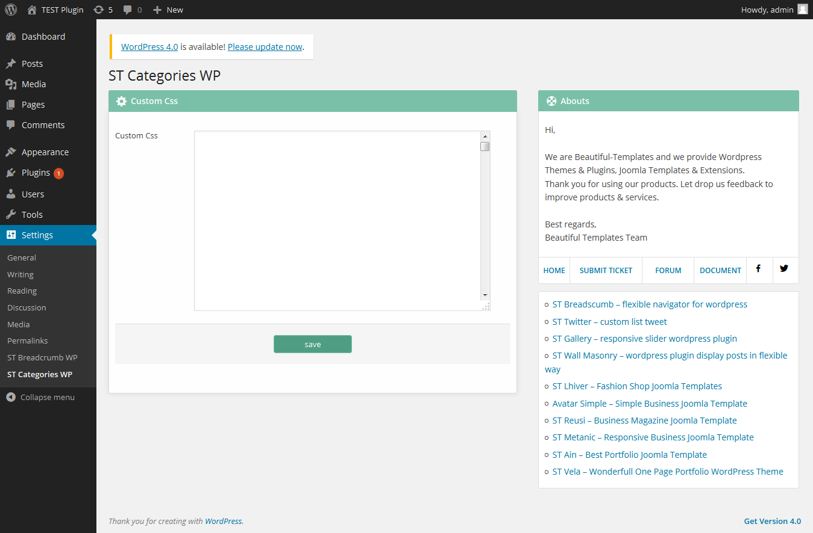
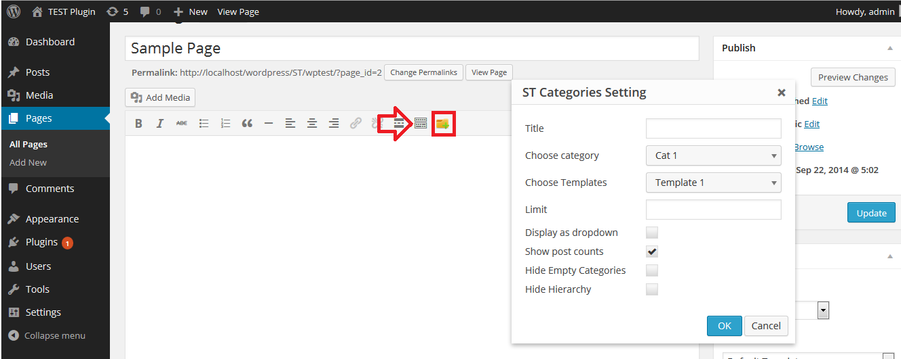
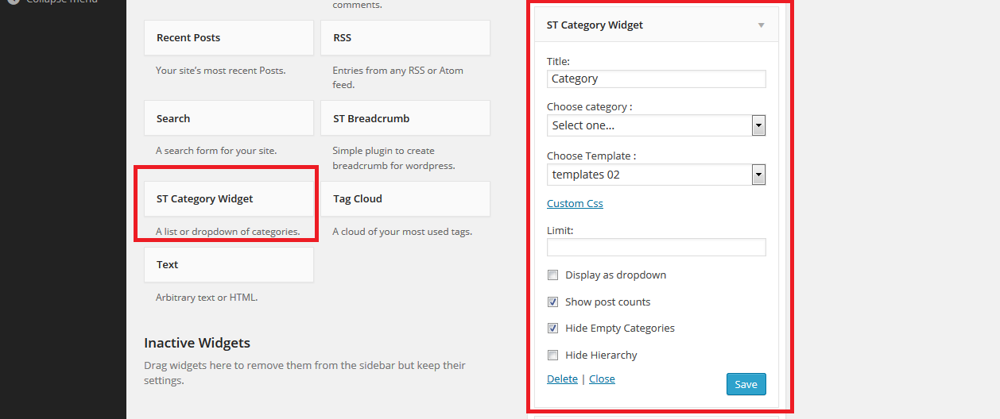

ST Categories WP
Documentation
This documentation file helps you to understand whole plugin concept and how it works. You should read all
sections of the file before start your work. After that you still can't find the solution yet, please leave
a ticket on Support system then support agents help your issue.
1: Installing
If you do not have ST Categories WP on your computer, you can download
it here ↓
-
Step 1: Upload the entire st-categories-wp folder to the /wp-content/plugins/
directory.
-
Step 2: Activate the plugin through the 'Plugins' menu in
WordPress.
You will find 'ST Categories WP' in settings menu of your WordPress admin panel.
2: Update
If you have ST Categories WP installed, check for updates and download
latest version ↓
-
Step 1: Reupload the entire st-categories-wp folder to the
/wp-content/plugins/ directory. (override folder st-google-map)
-
Step 2: Activate the plugin through the 'Plugins' menu in
WordPress.
You will find 'ST Categories WP' in Settings menu of your WordPress admin panel.
3: User interface
This is the user interface after successfully installing the plugin.

Questions 1: How to insert ST Categories WP to post, page?
-
Step 1: In post/page editor you click to button

-
Step 2: Settings and click to "OK"
Questions 2: How to insert ST Categories WP to widget?
-
Step 1: Select "ST Categories Widget"

-
Step 2: Settings and click to "Save"
If you have question beyond scope of this documentation, you can ask that with this form and your message
will send us via ticket system or forum.